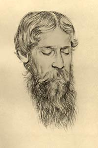
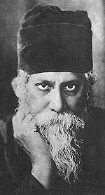
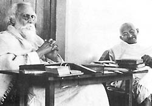
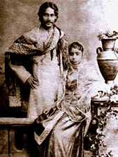
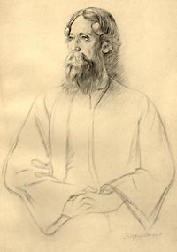
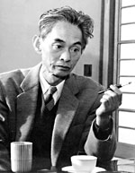
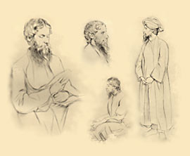

by
Amartya Sen*
1998 Prize Winner in Economics
Published in Mukto-Mona on September 30, 2005
Voice of Bengal
Rabindranath Tagore, who died in 1941 at the age of eighty, is a towering figure in the millennium-old literature of Bengal. Anyone who becomes familiar with this large and flourishing tradition will be impressed by the power of Tagore's presence in Bangladesh and in India. His poetry as well as his novels, short stories, and essays are very widely read, and the songs he composed reverberate around the eastern part of India and throughout Bangladesh.
In contrast, in the rest of the world, especially in Europe and America, the excitement that Tagore's writings created in the early years of the twentieth century has largely vanished. The enthusiasm with which his work was once greeted was quite remarkable. Gitanjali, a selection of his poetry for which he was awarded the Nobel Prize in Literature in 1913, was published in English translation in London in March of that year, and had been reprinted ten times by November, when the award was announced. But he is not much read now in the West, and already by 1937, Graham Greene was able to say: "As for Rabindranath Tagore, I cannot believe that anyone but Mr. Yeats can still take his poems very seriously."
The Mystic
The contrast between Tagore's commanding presence in Bengali literature and culture, and his near-total eclipse in the rest of the world, is perhaps less interesting than the distinction between the view of Tagore as a deeply relevant and many-sided contemporary thinker in Bangladesh and India, and his image in the West as a repetitive and remote spiritualist. Graham Greene had, in fact, gone on to explain that he associated Tagore "with what Chesterton calls 'the bright pebbly eyes' of the Theosophists." Certainly, an air of mysticism played some part in the "selling" of Rabindranath Tagore to the West by Yeats, Ezra Pound, and his other early champions. Even Anna Akhmatova, one of Tagore's few later admirers (who translated his poems into Russian in the mid-1960s), talks of "that mighty flow of poetry which takes its strength from Hinduism as from the Ganges, and is called Rabindranath Tagore."
|
 |
|
An air of mysticism. |
Confluence of Cultures
Rabindranath did come from a Hindu family—one of the landed gentry who owned estates mostly in what is now Bangladesh. But whatever wisdom there might be in Akhmatova's invoking of Hinduism and the Ganges, it did not prevent the largely Muslim citizens of Bangladesh from having a deep sense of identity with Tagore and his ideas. Nor did it stop the newly independent Bangladesh from choosing one of Tagore's songs—the "Amar Sonar Bangla" which means "my golden Bengal"—as its national anthem. This must be very confusing to those who see the contemporary world as a "clash of civilizations"—with "the Muslim civilization," "the Hindu civilization," and "the Western civilization," each forcefully confronting the others. They would also be confused by Rabindranath Tagore's own description of his Bengali family as the product of "a confluence of three cultures: Hindu, Mohammedan, and British".1
Rabindranath's grandfather, Dwarkanath, was well known for his command of Arabic and Persian, and Rabindranath grew up in a family atmosphere in which a deep knowledge of Sanskrit and ancient Hindu texts was combined with an understanding of Islamic traditions as well as Persian literature. It is not so much that Rabindranath tried to produce—or had an interest in producing—a "synthesis" of the different religions (as the great Moghul emperor Akbar tried hard to achieve) as that his outlook was persistently non-sectarian, and his writings—some two hundred books—show the influence of different parts of the Indian cultural background as well as of the rest of the world. 2
Abode of Peace
Most of his work was written at Santiniketan (Abode of Peace), the small town that grew around the school he founded in Bengal in 1901, and he not only conceived there an imaginative and innovative system of education, but through his writings and his influence on students and teachers, he was able to use the school as a base from which he could take a major part in India's social, political, and cultural movements.
The profoundly original writer, whose elegant prose and magical poetry Bengali readers know well, is not the sermonizing spiritual guru admired—and then rejected—in London. Tagore was not only an immensely versatile poet; he was also a great short story writer, novelist, playwright, essayist, and composer of songs, as well as a talented painter whose pictures, with their mixture of representation and abstraction, are only now beginning to receive the acclaim that they have long deserved. His essays, moreover, ranged over literature, politics, culture, social change, religious beliefs, philosophical analysis, international relations, and much else. The coincidence of the fiftieth anniversary of Indian independence with the publication of a selection of Tagore's letters by Cambridge University Press 3, brought Tagore's ideas and reflections to the fore, which makes it important to examine what kind of leadership in thought and understanding he provided in the Indian subcontinent in the first half of this century.
Gandhi and Tagore
Since Rabindranath Tagore and Mohandas Gandhi were two leading Indian thinkers in the twentieth century, many commentators have tried to compare their ideas. On learning of Rabindranath's death, Jawaharlal Nehru, then incarcerated in a British jail in India, wrote in his prison diary for August 7, 1941:
"Gandhi and Tagore. Two types entirely different from each other, and yet both of them typical of India, both in the long line of India's great men ... It is not so much because of any single virtue but because of the tout ensemble, that I felt that among the world's great men today Gandhi and Tagore were supreme as human beings. What good fortune for me to have come into close contact with them."
Romain Rolland was fascinated by the contrast between them, and when he completed his book on Gandhi, he wrote to an Indian academic, in March 1923: "I have finished my Gandhi, in which I pay tribute to your two great river-like souls, overflowing with divine spirit, Tagore and Gandhi." The following month, he recorded in his diary an account of some of the differences between Gandhi and Tagore written by Reverend C.F. Andrews, the English clergyman and public activist who was a close friend of both men (and whose important role in Gandhi's life in South Africa as well as India is well portrayed in Richard Attenborough's film Gandhi [1982]). Andrews described to Rolland a discussion between Tagore and Gandhi, at which he was present, on subjects that divided them:
"The first subject of discussion was idols; Gandhi defended them, believing the masses incapable of raising themselves immediately to abstract ideas. Tagore cannot bear to see the people eternally treated as a child. Gandhi quoted the great things achieved in Europe by the flag as an idol; Tagore found it easy to object, but Gandhi held his ground, contrasting European flags bearing eagles, etc., with his own, on which he has put a spinning wheel. The second point of discussion was nationalism, which Gandhi defended. He said that one must go through nationalism to reach internationalism, in the same way that one must go through war to reach peace."4
Tagore greatly admired Gandhi but he had many disagreements with him on a variety of subjects, including nationalism, patriotism, the importance of cultural exchange, the role of rationality and of science, and the nature of economic and social development. These differences, I shall argue, have a clear and consistent pattern, with Tagore pressing for more room for reasoning, and for a less traditionalist view, a greater interest in the rest of the world, and more respect for science and for objectivity generally.
Rabindranath knew that he could not have given India the political leadership that Gandhi provided, and he was never stingy in his praise for what Gandhi did for the nation (it was, in fact, Tagore who popularized the term "Mahatma"—great soul—as a description of Gandhi). And yet each remained deeply critical of many things that the other stood for. That Mahatma Gandhi has received incomparably more attention outside India and also within much of India itself makes it important to understand "Tagore's side" of the Gandhi-Tagore debates.
In his prison diary, Nehru wrote: "Perhaps it is as well that [Tagore] died now and did not see the many horrors that are likely to descend in increasing measure on the world and on India. He had seen enough and he was infinitely sad and unhappy." Toward the end of his life, Tagore was indeed becoming discouraged about the state of India, especially as its normal burden of problems, such as hunger and poverty, was being supplemented by politically organized incitement to "communal" violence between Hindus and Muslims. This conflict would lead in 1947, six years after Tagore's death, to the widespread killing that took place during partition; but there was much gore already during his declining days. In December 1939, he wrote to his friend Leonard Elmhirst, the English philanthropist and social reformer who had worked closely with him on rural reconstruction in India (and who had gone on to found the Dartington Hall Trust in England and a progressive school at Dartington that explicitly invoked Rabindranath's educational ideals):5
"It does not need a defeatist to feel deeply anxious about the future of millions who, with all their innate culture and their peaceful traditions are being simultaneously subjected to hunger, disease, exploitations foreign and indigenous, and the seething discontents of communalism."
How would Tagore have viewed the India of today? Would he see progress there, or wasted opportunity, perhaps even a betrayal of its promise and conviction? And, on a wider subject, how would he react to the spread of cultural separatism in the contemporary world?
East and West
Given the vast range of his creative achievements, perhaps the most astonishing aspect of the image of Tagore in the West is its narrowness; he is recurrently viewed as "the great mystic from the East," an image with a putative message for the West, which some would welcome, others dislike, and still others find deeply boring. To a great extent this Tagore was the West's own creation, part of its tradition of message-seeking from the East, particularly from India, which—as Hegel put it—had "existed for millennia in the imagination of the Europeans."6 Friedrich Schlegel, Schelling, Herder, and Schopenhauer were only a few of the thinkers who followed the same pattern. They theorized, at first, that India was the source of superior wisdom. Schopenhauer at one stage even argued that the New Testament "must somehow be of Indian origin: this is attested by its completely Indian ethics, which transforms morals into asceticism, its pessimism, and its avatar," in "the person of Christ." But then they rejected their own theories with great vehemence, sometimes blaming India for not living up to their unfounded expectations.
We can imagine that Rabindranath's physical appearance—handsome, bearded, dressed in non-Western clothes—may, to some extent, have encouraged his being seen as a carrier of exotic wisdom. Yasunari Kawabata, the first Japanese Nobel Laureate in Literature, treasured memories from his middle-school days of "this sage-like poet":
His white hair flowed softly down both sides of his forehead; the tufts of hair under the temples also were long like two beards, and linking up with the hair on his cheeks, continued into his beard, so that he gave an impression, to the boy I was then, of some ancient Oriental wizard.7
That appearance would have been well-suited to the selling of Tagore in the West as a quintessentially mystical poet, and it could have made it somewhat easier to pigeonhole him. Commenting on Rabindranath's appearance, Frances Cornford told William Rothenstein, "I can now imagine a powerful and gentle Christ, which I never could before." Beatrice Webb, who did not like Tagore and resented what she took to be his "quite obvious dislike of all that the Webbs stand for" (there is, in fact, little evidence that Tagore had given much thought to this subject), said that he was "beautiful to look at" and that "his speech has the perfect intonation and slow chant-like moderation of the dramatic saint." Ezra Pound and W. B. Yeats, among others, first led the chorus of adoration in the Western appreciation of Tagore, and then soon moved to neglect and even shrill criticism. The contrast between Yeats's praise of his work in 1912 ("These lyrics…display in their thought a world I have dreamed of all my life long," "the work of a supreme culture") and his denunciation in 1935 ("Damn Tagore") arose partly from the inability of Tagore's many-sided writings to fit into the narrow box in which Yeats wanted to place—and keep—him. Certainly, Tagore did write a huge amount, and published ceaselessly, even in English (sometimes in indifferent English translation), but Yeats was also bothered, it is clear, by the difficulty of fitting Tagore's later writings into the image Yeats had presented to the West. Tagore, he had said, was the product of "a whole people, a whole civilization, immeasurably strange to us," and yet "we have met our own image,…or heard, perhaps for the first time in literature, our voice as in a dream."8
Yeats did not totally reject his early admiration (as Ezra Pound and several others did), and he included some of Tagore's early poems in The Oxford Book of Modern Verse, which he edited in 1936. Yeats also had some favorable things to say about Tagore's prose writings. His censure of Tagore's later poems was reinforced by his dislike of Tagore's own English translations of his work ("Tagore does not know English, no Indian knows English," Yeats explained), unlike the English version of Gitanjali which Yeats had himself helped to prepare. Poetry is, of course, notoriously difficult to translate, and anyone who knows Tagore's poems in their original Bengali cannot feel satisfied with any of the translations (made with or without Yeats's help). Even the translations of his prose works suffer, to some extent, from distortion. E.M. Forster noted, in a review of a translation of one of Tagore's great Bengali novels, The Home and the World, in 1919: "The theme is so beautiful," but the charms have "vanished in translation," or perhaps "in an experiment that has not quite come off."9
Tagore himself played a somewhat bemused part in the boom and bust of his English reputation. He accepted the extravagant praise with much surprise as well as pleasure, and then received denunciations with even greater surprise, and barely concealed pain. Tagore was sensitive to criticism, and was hurt by even the most far-fetched accusations, such as the charge that he was getting credit for the work of Yeats, who had "rewritten" Gitanjali. (This charge was made by a correspondent for The Times, Sir Valentine Chirol, whom E.M. Forster once described as "an old Anglo-Indian reactionary hack.") From time to time Tagore also protested the crudity of some of his overexcited advocates. He wrote to C.F. Andrews in 1920: "These people…are like drunkards who are afraid of their lucid intervals."
God and Others
Yeats was not wrong to see a large religious element in Tagore's writings. He certainly had interesting and arresting things to say about life and death. Susan Owen, the mother of Wilfred Owen, wrote to Rabindranath in 1920, describing her last conversations with her son before he left for the war which would take his life. Wilfred said goodbye with "those wonderful words of yours—beginning at 'When I go from hence, let this be my parting word.'" When Wilfred's pocket notebook was returned to his mother, she found "these words written in his dear writing—with your name beneath."
The idea of a direct, joyful, and totally fearless relationship with God can be found in many of Tagore's religious writings, including the poems of Gitanjali. From India's diverse religious traditions he drew many ideas, both from ancient texts and from popular poetry. But "the bright pebbly eyes of the Theosophists" do not stare out of his verses. Despite the archaic language of the original translation of Gitanjali, which did not, I believe, help to preserve the simplicity of the original, its elementary humanity comes through more clearly than any complex and intense spirituality:
Leave this chanting and singing and telling of beads! Whom dost thou worship in this lonely dark corner of a temple with doors all shut?
Open thine eyes and see thy God is not before thee!
He is there where the tiller is tilling the hard ground and where the pathmaker is breaking stones.
He is with them in sun and in shower, and his garment is covered with dust.
An ambiguity about religious experience is central to many of Tagore's devotional poems, and makes them appeal to readers irrespective of their beliefs; but excessively detailed interpretation can ruinously strip away that ambiguity.10 This applies particularly to his many poems which combine images of human love and those of pious devotion. Tagore writes:
I have no sleep to-night. Ever and again I open my door and look out on the darkness, my friend!
I can see nothing before me. I wonder where lies thy path!
By what dim shore of the ink-black river, by what far edge of the frowning forest, through what mazy depth of gloom, art thou threading thy course to come to see me, my friend?
I suppose it could be helpful to be told, as Yeats hastens to explain, that "the servant or the bride awaiting the master's home-coming in the empty house" is "among the images of the heart turning to God." But in Yeats's considerate attempt to make sure that the reader does not miss the "main point," something of the enigmatic beauty of the Bengali poem is lost - even what had survived the antiquated language of the English translation. Tagore certainly had strongly held religious beliefs (of an unusually nondenominational kind), but he was interested in a great many other things as well and had many different things to say about them.
Some of the ideas he tried to present were directly political, and they figure rather prominently in his letters and lectures. He had practical, plainly expressed views about nationalism, war and peace, cross-cultural education, freedom of the mind, the importance of rational criticism, the need for openness, and so on. His admirers in the West, however, were tuned to the more otherworldly themes which had been emphasized by his first Western patrons. People came to his public lectures in Europe and America, expecting ruminations on grand, transcendental themes; when they heard instead his views on the way public leaders should behave, there was some resentment, particularly (as E.P. Thompson reports) when he delivered political criticism "at $700 a scold."
|
 |
|
An ambiguity about
religious experience. |
Reasoning in Freedom
For Tagore it was of the highest importance that people be able to live, and reason, in freedom. His attitudes toward politics and culture, nationalism and internationalism, tradition and modernity, can all be seen in the light of this belief.11 Nothing, perhaps, expresses his values as clearly as a poem in Gitanjali:
Where the mind is without fear
and the head is held high;
Where knowledge is free;
Where the world has not been
broken up into fragments
by narrow domestic walls; ...
Where the clear stream of reason
has not lost its way into the
dreary desert sand of dead habit; ...
Into that heaven of freedom,
my Father, let my country awake.
Rabindranath's qualified support for nationalist movements—and his opposition to the unfreedom of alien rule—came from this commitment. So did his reservations about patriotism, which, he argued, can limit both the freedom to engage ideas from outside "narrow domestic walls" and the freedom also to support the causes of people in other countries. Rabindranath's passion for freedom underlies his firm opposition to unreasoned traditionalism, which makes one a prisoner of the past (lost, as he put it, in "the dreary desert sand of dead habit").
Tagore illustrates the tyranny of the past in his amusing yet deeply serious parable "Kartar Bhoot" ("The Ghost of the Leader"). As the respected leader of an imaginary land is about to die, his panic-stricken followers request him to stay on after his death to instruct them on what to do. He consents. But his followers find their lives are full of rituals and constraints on everyday behavior and are not responsive to the world around them. Ultimately, they request the ghost of the leader to relieve them of his domination, when he informs them that he exists only in their minds.
Tagore's deep aversion to any commitment to the past that could not be modified by contemporary reason extended even to the alleged virtue of invariably keeping past promises. On one occasion when Mahatma Gandhi visited Tagore's school at Santiniketan, a young woman got him to sign her autograph book. Gandhi wrote: "Never make a promise in haste. Having once made it fulfill it at the cost of your life." When he saw this entry, Tagore became agitated. He wrote in the same book a short poem in Bengali to the effect that no one can be made "a prisoner forever with a chain of clay." He went on to conclude in English, possibly so that Gandhi could read it too, "Fling away your promise if it is found to be wrong."12
|
 |
|
Tagore and Gandhi, in
Shantiniketan, 1940. |
Tagore had the greatest admiration for Mahatma Gandhi as a person and as a political leader, but he was also highly skeptical of Gandhi's form of nationalism and his conservative instincts regarding the country's past traditions. He never criticized Gandhi personally. In the 1938 essay, "Gandhi the Man," he wrote:
Great as he is as a politician, as an organizer, as a leader of men, as a moral reformer, he is greater than all these as a man, because none of these aspects and activities limits his humanity. They are rather inspired and sustained by it.
And yet there is a deep division between the two men. Tagore was explicit about his disagreement:
We who often glorify our tendency to ignore reason, installing in its place blind faith, valuing it as spiritual, are ever paying for its cost with the obscuration of our mind and destiny. I blamed Mahatmaji for exploiting this irrational force of credulity in our people, which might have had a quick result [in creating] a superstructure, while sapping the foundation. Thus began my estimate of Mahatmaji, as the guide of our nation, and it is fortunate for me that it did not end there.
But while it "did not end there," that difference of vision was a powerful divider. Tagore, for example, remained unconvinced of the merit of Gandhi's forceful advocacy that everyone should spin at home with the "charka," the primitive spinning wheel. For Gandhi this practice was an important part of India's self-realization. "The spinning-wheel gradually became," as his biographer B.R. Nanda writes, "the center of rural uplift in the Gandhian scheme of Indian economics."13 Tagore found the alleged economic rationale for this scheme quite unrealistic. As Romain Rolland noted, Rabindranath "never tires of criticizing the charka." In this economic judgment, Tagore was probably right. Except for the rather small specialized market for high-quality spun cloth, it is hard to make economic sense of hand-spinning, even with wheels less primitive than Gandhi's charka. Hand-spinning as a widespread activity can survive only with the help of heavy government subsidies.14 However, Gandhi's advocacy of the charka was not based only on economics. He wanted everyone to spin for "thirty minutes every day as a sacrifice," seeing this as a way for people who are better off to identify themselves with the less fortunate. He was impatient with Tagore's refusal to grasp this point:
The poet lives for the morrow, and would have us do likewise…. "Why should I, who have no need to work for food, spin?" may be the question asked. Because I am eating what does not belong to me. I am living on the spoliation of my countrymen. Trace the source of every coin that finds its way into your pocket, and you will realise the truth of what I write. Every one must spin. Let Tagore spin like the others. Let him burn his foreign clothes; that is the duty today. God will take care of the morrow.15
If Tagore had missed something in Gandhi's argument, so did Gandhi miss the point of Tagore's main criticism. It was not only that the charka made little economic sense, but also, Tagore thought, that it was not the way to make people reflect on anything: "The charka does not require anyone to think; one simply turns the wheel of the antiquated invention endlessly, using the minimum of judgment and stamina."
Celibacy and Personal Life
Tagore and Gandhi's attitudes toward personal life were also quite different. Gandhi was keen on the virtues of celibacy, theorized about it, and, after some years of conjugal life, made a private commitment—publicly announced—to refrain from sleeping with his wife. Rabindranath's own attitude on this subject was very different, but he was gentle about their disagreements:
[Gandhiji] condemns sexual life as inconsistent with the moral progress of man, and has a horror of sex as great as that of the author of The Kreutzer Sonata, but, unlike Tolstoy, he betrays no abhorrence of the sex that tempts his kind. In fact, his tenderness for women is one of the noblest and most consistent traits of his character, and he counts among the women of his country some of his best and truest comrades in the great movement he is leading.
Tagore's personal life was, in many ways, an unhappy one. He married in 1883, lost his wife in 1902, and never remarried. He sought close companionship, which he did not always get (perhaps even during his married life—he wrote to his wife, Mrinalini: "If you and I could be comrades in all our work and in all our thoughts it would be splendid, but we cannot attain all that we desire"). He maintained a warm friendship with, and a strong Platonic attachment to, the literature-loving wife, Kadambari, of his elder brother, Jyotirindranath. He dedicated some poems to her before his marriage, and several books afterward, some after her death (she committed suicide, for reasons that are not fully understood, at the age of twenty-five, four months after Rabindranath's wedding). Much later in life, during his tour of Argentina in 1924-1925, Rabindranath came to know the talented and beautiful Victoria Ocampo, who later became the publisher of the literary magazine Sur. They became close friends, but it appears that Rabindranath deflected the possibility of a passionate relationship into a confined intellectual one.16 His friend Leonard Elmhirst, who accompanied Rabindranath on his Argentine tour, wrote:
Besides having a keen intellectual understanding of his books, she was in love with him—but instead of being content to build a friendship on the basis of intellect, she was in a hurry to establish that kind of proprietary right over him which he absolutely would not brook.
Ocampo and Elmhirst, while remaining friendly, were both quite rude in what they wrote about each other. Ocampo's book on Tagore (of which a Bengali translation was made from the Spanish by the distinguished poet and critic Shankha Ghosh) is primarily concerned with Tagore's writings but also discusses the pleasures and difficulties of their relationship, giving quite a different account from Elmhirst's, and never suggesting any sort of proprietary intentions.
Victoria Ocampo, however, makes it clear that she very much wanted to get physically closer to Rabindranath: "Little by little he [Tagore] partially tamed the young animal, by turns wild and docile, who did not sleep, dog-like, on the floor outside his door, simply because it was not done."17 Rabindranath, too, was clearly very much attracted to her. He called her "Vijaya" (the Sanskrit equivalent of Victoria), dedicated a book of poems to her, Purabi—an "evening melody," and expressed great admiration for her mind ("like a star that was distant"). In a letter to her he wrote, as if to explain his own reticence:
When we were together, we mostly played with words and tried to laugh away our best opportunities to see each other clearly ... Whenever there is the least sign of the nest becoming a jealous rival of the sky [,] my mind, like a migrant bird, tries to take ... flight to a distant shore.
Five years later, during Tagore's European tour in 1930, he sent her a cable: "Will you not come and see me." She did. But their relationship did not seem to go much beyond conversation, and their somewhat ambiguous correspondence continued over the years. Written in 1940, a year before his death at eighty, one of the poems in Sesh Lekha ("Last Writings"), seems to be about her: "How I wish I could once again find my way to that foreign land where waits for me the message of love!/… Her language I knew not, but what her eyes said will forever remain eloquent in its anguish."18 However indecisive, or confused, or awkward Rabindranath may have been, he certainly did not share Mahatma Gandhi's censorious views of sex. In fact, when it came to social policy, he advocated contraception and family planning while Gandhi preferred abstinence.
|
 |
|
Tagore with his wife
Mrinalini Devi in 1883. |
Science and the People
Gandhi and Tagore severely clashed over their totally different attitudes toward science. In January 1934, Bihar was struck by a devastating earthquake, which killed thousands of people. Gandhi, who was then deeply involved in the fight against untouchability (the barbaric system inherited from India's divisive past, in which "lowly people" were kept at a physical distance), extracted a positive lesson from the tragic event. "A man like me," Gandhi argued, "cannot but believe this earthquake is a divine chastisement sent by God for our sins" —in particular the sins of untouchability. "For me there is a vital connection between the Bihar calamity and the untouchability campaign."
Tagore, who equally abhorred untouchability and had joined Gandhi in the movements against it, protested against this interpretation of an event that had caused suffering and death to so many innocent people, including children and babies. He also hated the epistemology implicit in seeing an earthquake as caused by ethical failure. "It is," he wrote, "all the more unfortunate because this kind of unscientific view of [natural] phenomena is too readily accepted by a large section of our countrymen."
The two
remained deeply divided over their attitudes toward science. However,
while Tagore believed that modern science was essential to the
understanding of physical phenomena, his views on epistemology were
interestingly heterodox. He did not take the simple "realist" position
often associated with modern science. The report of his conversation
with Einstein, published in The New York Times in 1930, shows how
insistent Tagore was on interpreting truth through observation and
reflective concepts. To assert that something is true or untrue in the
absence of anyone to observe or perceive its truth, or to form a
conception of what it is, appeared to Tagore to be deeply questionable.
When Einstein remarked, "If there were no human beings any more, the
Apollo Belvedere no longer would be beautiful?" Tagore simply replied,
"No." Going further—and into much more interesting territory—Einstein
said, "I agree with regard to this conception of beauty, but not with
regard to truth." Tagore's response was: "Why not? Truth is realized
through men."19
|
|
|
Albert Einstein and
Tagore, in New York, 1930. |

Tagore's epistemology, which he never pursued systematically, would seem to be searching for a line of reasoning that would later be elegantly developed by Hilary Putnam, who has argued: "Truth depends on conceptual schemes and it is nonetheless 'real truth.'"20 Tagore himself said little to explain his convictions, but it is important to take account of his heterodoxy, not only because his speculations were invariably interesting, but also because they illustrate how his support for any position, including his strong interest in science, was accompanied by critical scrutiny.
Nationalism and Colonialism
Tagore was predictably hostile to communal sectarianism (such as a Hindu orthodoxy that was antagonistic to Islamic, Christian, or Sikh perspectives). But even nationalism seemed to him to be suspect. Isaiah Berlin summarizes well Tagore's complex position on Indian nationalism:
Tagore stood fast on the narrow causeway, and did not betray his vision of the difficult truth. He condemned romantic overattachment to the past, what he called the tying of India to the past "like a sacrificial goat tethered to a post," and he accused men who displayed it - they seemed to him reactionary - of not knowing what true political freedom was, pointing out that it is from English thinkers and English books that the very notion of political liberty was derived. But against cosmopolitanism he maintained that the English stood on their own feet, and so must Indians. In 1917 he once more denounced the danger of ‘leaving everything to the unalterable will of the Master,' be he brahmin or Englishman.21
The duality Berlin points to is well reflected also in Tagore's attitude toward cultural diversity. He wanted Indians to learn what is going on elsewhere, how others lived, what they valued, and so on, while remaining interested and involved in their own culture and heritage. Indeed, in his educational writings the need for synthesis is strongly stressed. It can also be found in his advice to Indian students abroad. In 1907 he wrote to his son-in-law Nagendranath Gangulee, who had gone to America to study agriculture:
To get on familiar terms with the local people is a part of your education. To know only agriculture is not enough; you must know America too. Of course if, in the process of knowing America, one begins to lose one's identity and falls into the trap of becoming an Americanised person contemptuous of everything Indian, it is preferable to stay in a locked room.
Tagore was strongly involved in protest against the Raj on a number of occasions, most notably in the movement to resist the 1905 British proposal to split in two the province of Bengal, a plan that was eventually withdrawn following popular resistance. He was forthright in denouncing the brutality of British rule in India, never more so than after the Amritsar massacre of April 13, 1919, when 379 unarmed people at a peaceful meeting were gunned down by the army, and two thousand more were wounded. Between April 23 and 26, Rabindranath wrote five agitated letters to C.F. Andrews, who himself was extremely disturbed, especially after he was told by a British civil servant in India that thanks to this show of strength, the "moral prestige" of the Raj had "never been higher."
A month after the massacre, Tagore wrote to the Viceroy of India, asking to be relieved of the knighthood he had accepted four years earlier:
The disproportionate severity of the punishments inflicted upon the unfortunate people and the methods of carrying them out, we are convinced, are without parallel in the history of civilized governments, barring some conspicuous exceptions, recent and remote. Considering that such treatment has been meted out to a population, disarmed and resourceless, by a power which has the most terribly efficient organisation for destruction of human lives, we must strongly assert that it can claim no political expediency, far less moral justification.... The universal agony of indignation roused in the hearts of our people has been ignored by our rulers - possibly congratulating themselves for imparting what they imagine as salutary lessons…. I for my part want to stand, shorn of all special distinctions, by the side of those of my countrymen who for their so-called insignificance are liable to suffer a degradation not fit for human beings.
Both Gandhi and Nehru expressed their appreciation of the important part Tagore took in the national struggle. It is fitting that after independence, India chose a song of Tagore ("Jana Gana Mana Adhinayaka," which can be roughly translated as "the leader of people's minds") as its national anthem. Since Bangladesh would later choose another song of Tagore ("Amar Sonar Bangla") as its national anthem, he may be the only one ever to have authored the national anthems of two different countries.
Tagore's criticism of the British administration of India was consistently strong and grew more intense over the years. This point is often missed, since he made a special effort to dissociate his criticism of the Raj from any denigration of British—or Western—people and culture. Mahatma Gandhi's well-known quip in reply to a question, asked in England, on what he thought of Western civilization ("It would be a good idea") could not have come from Tagore's lips. He would understand the provocations to which Gandhi was responding - involving cultural conceit as well as imperial tyranny. D.H. Lawrence supplied a fine example of the former: "I become more and more surprised to see how far higher, in reality, our European civilization stands than the East, Indian and Persian, ever dreamed of…. This fraud of looking up to them—this wretched worship-of-Tagore attitude is disgusting." But, unlike Gandhi, Tagore could not, even in jest, be dismissive of Western civilization.
|
 |
|
Forthright in denouncing
the brutality of British rule in India. |
Even in his powerful indictment of British rule in India in 1941, in a lecture which he gave on his last birthday, and which was later published as a pamphlet under the title Crisis in Civilization, he strains hard to maintain the distinction between opposing Western imperialism and rejecting Western civilization. While he saw India as having been "smothered under the dead weight of British administration" (adding "another great and ancient civilization for whose recent tragic history the British cannot disclaim responsibility is China"), Tagore recalls what India has gained from "discussions centred upon Shakespeare's drama and Byron's poetry and above all…the large-hearted liberalism of nineteenth-century English politics." The tragedy, as Tagore saw it, came from the fact that what "was truly best in their own civilization, the upholding of dignity of human relationships, has no place in the British administration of this country." "If in its place they have established, baton in hand, a reign of 'law and order,' or in other words a policeman's rule, such a mockery of civilization can claim no respect from us."
Critique of Patriotism
Rabindranath rebelled against the strongly nationalist form that the independence movement often took, and this made him refrain from taking a particularly active part in contemporary politics. He wanted to assert India's right to be independent without denying the importance of what India could learn—freely and profitably—from abroad. He was afraid that a rejection of the West in favor of an indigenous Indian tradition was not only limiting in itself; it could easily turn into hostility to other influences from abroad, including Christianity, which came to parts of India by the fourth century; Judaism, which came through Jewish immigration shortly after the fall of Jerusalem, as did Zoroastrianism through Parsi immigration later on (mainly in the eighth century), and, of course—and most importantly—Islam, which has had a very strong presence in India since the tenth century.
Tagore's criticism of patriotism is a persistent theme in his writings. As early as 1908, he put his position succinctly in a letter replying to the criticism of Abala Bose, the wife of a great Indian scientist, Jagadish Chandra Bose: "Patriotism cannot be our final spiritual shelter; my refuge is humanity. I will not buy glass for the price of diamonds, and I will never allow patriotism to triumph over humanity as long as I live." His novel Ghare Baire (The Home and the World) has much to say about this theme. In the novel, Nikhil, who is keen on social reform, including women's liberation, but cool toward nationalism, gradually loses the esteem of his spirited wife, Bimala, because of his failure to be enthusiastic about anti-British agitations, which she sees as a lack of patriotic commitment. Bimala becomes fascinated with Nikhil's nationalist friend Sandip, who speaks brilliantly and acts with patriotic militancy, and she falls in love with him. Nikhil refuses to change his views: "I am willing to serve my country; but my worship I reserve for Right which is far greater than my country. To worship my country as a god is to bring a curse upon it."22
As the story unfolds, Sandip becomes angry with some of his countrymen for their failure to join the struggle as readily as he thinks they should ("Some Mohamedan traders are still obdurate"). He arranges to deal with the recalcitrants by burning their meager trading stocks and physically attacking them. Bimala has to acknowledge the connection between Sandip's rousing nationalistic sentiments and his sectarian - and ultimately violent-actions. The dramatic events that follow (Nikhil attempts to help the victims, risking his life) include the end of Bimala's political romance.
This is a difficult subject, and Satyajit Ray's beautiful film of The Home and the World brilliantly brings out the novel's tensions, along with the human affections and disaffections of the story. Not surprisingly, the story has had many detractors, not just among dedicated nationalists in India. Georg Lukács found Tagore's novel to be "a petit bourgeois yarn of the shoddiest kind," "at the intellectual service of the British police," and "a contemptible caricature of Gandhi." It would, of course, be absurd to think of Sandip as Gandhi, but the novel gives a "strong and gentle" warning, as Bertolt Brecht noted in his diary, of the corruptibility of nationalism, since it is not even-handed. Hatred of one group can lead to hatred of others, no matter how far such feeling may be from the minds of large-hearted nationalist leaders like Mahatma Gandhi.
Admiration and Criticism of Japan
Tagore's reaction to nationalism in Japan is particularly telling. As in the case of India, he saw the need to build the self-confidence of a defeated and humiliated people, of people left behind by developments elsewhere, as was the case in Japan before its emergence during the nineteenth century. At the beginning of one of his lectures in Japan in 1916 ("Nationalism in Japan"), he observed that "the worst form of bondage is the bondage of dejection, which keeps men hopelessly chained in loss of faith in themselves." Tagore shared the admiration for Japan widespread in Asia for demonstrating the ability of an Asian nation to rival the West in industrial development and economic progress. He noted with great satisfaction that Japan had "in giant strides left centuries of inaction behind, overtaking the present time in its foremost achievement." For other nations outside the West, he said, Japan "has broken the spell under which we lay in torpor for ages, taking it to be the normal condition of certain races living in certain geographical limits."
But then Tagore went on to criticize the rise of a strong nationalism in Japan, and its emergence as an imperialist nation. Tagore's outspoken criticisms did not please Japanese audiences and, as E.P. Thompson wrote, "the welcome given to him on his first arrival soon cooled."23 Twenty-two years later, in 1937, during the Japanese war on China, Tagore received a letter from Rash Behari Bose, an anti-British Indian revolutionary then living in Japan, who sought Tagore's approval for his efforts there on behalf of Indian independence, in which he had the support of the Japanese government. Tagore replied:
Your cable has caused me many restless hours, for it hurts me very much to have to ignore your appeal. I wish you had asked for my cooperation in a cause against which my spirit did not protest. I know, in making this appeal, you counted on my great regard for the Japanese for I, along with the rest of Asia, did once admire and look up to Japan and did once fondly hope that in Japan Asia had at last discovered its challenge to the West, that Japan's new strength would be consecrated in safeguarding the culture of the East against alien interests. But Japan has not taken long to betray that rising hope and repudiate all that seemed significant in her wonderful, and, to us symbolic, awakening, and has now become itself a worse menace to the defenceless peoples of the East.
How to view Japan's position in the Second World War was a divisive issue in India. After the war, when Japanese political leaders were tried for war crimes, the sole dissenting voice among the judges came from the Indian judge, Radhabinod Pal, a distinguished jurist. Pal dissented on various grounds, among them that no fair trial was possible in view of the asymmetry of power between the victor and the defeated. Ambivalent feelings in India toward the Japanese military aggression, given the unacceptable nature of British imperialism, possibly had a part in predisposing Pal to consider a perspective different from that of the other judges.
More tellingly, Subhas Chandra Bose (no relation of Rash Behari Bose), a leading nationalist, made his way to Japan during the war via Italy and Germany after escaping from a British prison; he helped the Japanese to form units of Indian soldiers, who had earlier surrendered to the advancing Japanese army, to fight on the Japanese side as the "Indian National Army." Rabindranath had formerly entertained great admiration for Subhas Bose as a dedicated nonsectarian fighter for Indian independence.24 But their ways would have parted when Bose's political activities took this turn, although Tagore was dead by the time Bose reached Japan.
Tagore saw Japanese militarism as illustrating the way nationalism can mislead even a nation of great achievement and promise. In 1938 Yone Noguchi, the distinguished poet and friend of Tagore (as well as of Yeats and Pound), wrote to Tagore, pleading with him to change his mind about Japan. Rabindranath's reply, written on September 12, 1938, was altogether uncompromising:
It seems to me that it is futile for either of us to try to convince the other, since your faith in the infallible right of Japan to bully other Asiatic nations into line with your Government's policy is not shared by me…. Believe me, it is sorrow and shame, not anger, that prompt me to write to you. I suffer intensely not only because the reports of Chinese suffering batter against my heart, but because I can no longer point out with pride the example of a great Japan.
He would have been much happier with the postwar emergence of Japan as a peaceful power. Then, too, since he was not free of egotism, he would also have been pleased by the attention paid to his ideas by the novelist Yasunari Kawabata and others.25
|
 |
|
Yasunari Kawabata |
International Concerns
Tagore was not invariably well-informed about international politics. He allowed himself to be entertained by Mussolini in a short visit to Italy in May-June 1926, a visit arranged by Carlo Formichi, professor of Sanskrit at the University of Rome. When he asked to meet Benedetto Croce, Formichi said, "Impossible! Impossible!" Mussolini told him that Croce was "not in Rome." When Tagore said he would go "wherever he is," Mussolini assured him that Croce's whereabouts were unknown.
Such incidents, as well as warnings from Romain Rolland and other friends, should have ended Tagore's flirtation with Mussolini more quickly than it did. But only after he received graphic accounts of the brutality of Italian fascism from two exiles, Gaetano Salvemini and Gaetano Salvadori, and learned more of what was happening in Italy, did he publicly denounce the regime, publishing a letter to the Manchester Guardian in August. The next month, Popolo d'Italia, the magazine edited by Benito Mussolini's brother, replied: "Who cares? Italy laughs at Tagore and those who brought this unctuous and insupportable fellow in our midst."
With his high expectations of Britain, Tagore continued to be surprised by what he took to be a lack of official sympathy for international victims of aggression. He returned to this theme in the lecture he gave on his last birthday, in 1941:
While Japan was quietly devouring North China, her act of wanton aggression was ignored as a minor incident by the veterans of British diplomacy. We have also witnessed from this distance how actively the British statesmen acquiesced in the destruction of the Spanish Republic.
But distinguishing between the British government and the British people, Rabindranath went on to note "with admiration how a band of valiant Englishmen laid down their lives for Spain."
Tagore's view of the Soviet Union has been a subject of much discussion. He was widely read in Russia. In 1917 several Russian translations of Gitanjali (one edited by Ivan Bunin, later the first Russian Nobel Laureate in Literature) were available, and by the late 1920s many of the English versions of his work had been rendered into Russian by several distinguished translators. Russian versions of his work continued to appear: Boris Pasternak translated him in the 1950s and 1960s.
When Tagore visited Russia in 1930, he was much impressed by its development efforts and by what he saw as a real commitment to eliminate poverty and economic inequality. But what impressed him most was the expansion of basic education across the old Russian empire. In Letters from Russia, written in Bengali and published in 1931, he unfavorably compares the acceptance of widespread illiteracy in India by the British administration with Russian efforts to expand education:
In stepping on the soil of Russia, the first thing that caught my eye was that in education, at any rate, the peasant and the working classes have made such enormous progress in these few years that nothing comparable has happened even to our highest classes in the course of the last hundred and fifty years…. The people here are not at all afraid of giving complete education even to Turcomans of distant Asia; on the contrary, they are utterly in earnest about it. 26
When parts of the book were translated into English in 1934, the under-secretary for India stated in Parliament that it was "calculated by distortion of the facts to bring the British Administration in India into contempt and disrepute," and the book was then promptly banned. The English version would not be published until after independence.
Education and Freedom
The British Indian administrators were not, however, alone in trying to suppress Tagore's reflections on Russia. They were joined by Soviet officials. In an interview with Izvestia in 1930, Tagore sharply criticized the lack of freedom that he observed in Russia:
I must ask you: Are you doing your ideal a service by arousing in the minds of those under your training anger, class-hatred, and revengefulness against those whom you consider to be your enemies?… Freedom of mind is needed for the reception of truth; terror hopelessly kills it…. For the sake of humanity I hope you may never create a vicious force of violence, which will go on weaving an interminable chain of violence and cruelty…. You have tried to destroy many of the other evils of [the czarist] period. Why not try to destroy this one also?
The interview was not published in Izvestia until 1988—nearly sixty years later.27 Tagore's reaction to the Russia of 1930 arose from two of his strongest commitments: his uncompromising belief in the importance of "freedom of mind" (the source of his criticism of the Soviet Union), and his conviction that the expansion of basic education is central to social progress (the source of his praise, particularly in contrast to British-run India). He identified the lack of basic education as the fundamental cause of many of India's social and economic afflictions:
In my view the imposing tower of misery which today rests on the heart of India has its sole foundation in the absence of education. Caste divisions, religious conflicts, aversion to work, precarious economic conditions - all centre on this single factor.
It was on education (and on the reflection, dialogue, and communication that are associated with it), rather than on, say, spinning "as a sacrifice" ("the charka does not require anyone to think"), that the future of India would depend.
Tagore was concerned not only that there be wider opportunities for education across the country (especially in rural areas where schools were few), but also that the schools themselves be more lively and enjoyable. He himself had dropped out of school early, largely out of boredom, and had never bothered to earn a diploma. He wrote extensively on how schools should be made more attractive to boys and girls and thus more productive. His own co-educational school at Santiniketan had many progressive features. The emphasis here was on self-motivation rather than on discipline, and on fostering intellectual curiosity rather than competitive excellence.
Much of Rabindranath's life was spent in developing the school at Santiniketan. The school never had much money, since the fees were very low. His lecture honoraria, "$700 a scold," went to support it, as well as most of his Nobel Prize money. The school received no support from the government, but did get help from private citizens—even Mahatma Gandhi raised money for it.
The dispute with Mahatma Gandhi on the Bihar earthquake touched on a subject that was very important to Tagore: the need for education in science as well as in literature and the humanities. At Santiniketan, there were strong "local" elements in its emphasis on Indian traditions, including the classics, and in the use of Bengali rather than English as the language of instruction. At the same time there were courses on a great variety of cultures, and study programs devoted to China, Japan, and the Middle East. Many foreigners came to Santiniketan to study or teach, and the fusion of studies seemed to work.
I am partial
to seeing Tagore as an educator, having myself been educated at
Santiniketan. The school was unusual in many different ways, such as the
oddity that classes, excepting those requiring a laboratory, were held
outdoors (whenever the weather permitted). No matter what we thought of
Rabindranath's belief that one gains from being in a natural setting
while learning (some of us argued about this theory), we typically found
the experience of outdoor schooling extremely attractive and pleasant.
Academically, our school was not particularly exacting (often we did not
have any examinations at all), and it could not, by the usual academic
standards, compete with some of the better schools in Calcutta. But
there was something remarkable about the ease with which class
discussions could move from Indian traditional literature to
contemporary as well as classical Western thought, and then to the
culture of China or Japan or elsewhere. The school's celebration of
variety was also in sharp contrast with the cultural conservatism and
separatism that has tended to grip India from time to time.
The cultural give and take of Tagore's vision of the contemporary world
has close parallels with the vision of Satyajit Ray, also an alumnus of
Santiniketan who made several films based on Tagore's stories.28
Ray's words about Santiniketan in 1991 would have greatly pleased
Rabindranath:
I consider the three years I spent in Santiniketan as the most fruitful of my life…. Santiniketan opened my eyes for the first time to the splendours of Indian and Far Eastern art. Until then I was completely under the sway of Western art, music and literature. Santiniketan made me the combined product of East and West that I am.29
India Today
At the fiftieth anniversary of Indian independence, the reckoning of what India had or had not achieved in this half century was a subject of considerable interest: "What has been the story of those first fifty years?" (as Shashi Tharoor asked in his balanced, informative, and highly readable account of India: From Midnight to the Millennium).30 If Tagore were to see the India of today, more than half a century after independence, nothing perhaps would shock him so much as the continued illiteracy of the masses. He would see this as a total betrayal of what the nationalist leaders had promised during the struggle for independence—a promise that had figured even in Nehru's rousing speech on the eve of independence in August 1947 (on India's "tryst with destiny").
In view of his interest in childhood education, Tagore would not be consoled by the extraordinary expansion of university education, in which India sends to its universities six times as many people per unit of population as does China. Rather, he would be stunned that, in contrast to East and Southeast Asia, including China, half the adult population and two thirds of Indian women remain unable to read or write. Statistically reliable surveys indicate that even in the late 1980s, nearly half of the rural girls between the ages of twelve and fourteen did not attend any school for a single day of their lives.31
This state of affairs is the result of the continuation of British imperial neglect of mass education, which has been reinforced by India's traditional elitism, as well as upper-class-dominated contemporary politics (except in parts of India such as Kerala, where anti-upper-caste movements have tended to concentrate on education as a great leveller). Tagore would see illiteracy and the neglect of education not only as the main source of India's continued social backwardness, but also as a great constraint that restricts the possibility and reach of economic development in India (as his writings on rural development forcefully make clear). Tagore would also have strongly felt the need for a greater commitment—and a greater sense of urgency—in removing endemic poverty.
At the same time, Tagore would undoubtedly find some satisfaction in the survival of democracy in India, in its relatively free press, and in general from the "freedom of mind" that post-independence Indian politics has, on the whole, managed to maintain. He would also be pleased by the fact noted by the historian E.P. Thompson (whose father Edward Thompson had written one of the first major biographies of Tagore:32
All the convergent influences of the world run through this society: Hindu, Moslem, Christian, secular; Stalinist, liberal, Maoist, democratic socialist, Gandhian. There is not a thought that is being thought in the West or East that is not active in some Indian mind.33
Tagore would have been happy also to see that the one governmental attempt to dispense generally with basic liberties and political and civil rights in India, in the 1970s, when Prime Minister Indira Gandhi (ironically, herself a former student at Santiniketan) declared an "emergency," was overwhelmingly rejected by the Indian voters, leading to the precipitate fall of her government.
Rabindranath would also see that the changes in policy that have eliminated famine since independence had much to do with the freedom to be heard in a democratic India. In Tagore's play Raja O Rani ("The King and the Queen"), the sympathetic Queen eventually rebels against the callousness of state policy toward the hungry. She begins by inquiring about the ugly sounds outside the palace, only to be told that the noise is coming from "the coarse, clamorous crowd who howl unashamedly for food and disturb the sweet peace of the palace." The Viceregal office in India could have taken a similarly callous view of Indian famines, right up to the easily preventable Bengal famine of 1943, just before independence, which killed between two and three million people. But a government in a multi-party democracy, with elections and free newspapers, cannot any longer dismiss the noise from "the coarse, clamorous crowd."34
|
 |
|
Fearless reasoning in freedom. |
Unlike Gandhi, Rabindranath would not resent the development of modern industries in India, or the acceleration of technical progress, since he did not want India to be shackled to the turning of "the wheel of an antiquated invention." Tagore was concerned that people not be dominated by machines, but he was not opposed to making good use of modern technology. "The mastery over the machine," he wrote in Crisis in Civilization, "by which the British have consolidated their sovereignty over their vast empire, has been kept a sealed book, to which due access has been denied to this helpless country." Rabindranath had a deep interest in the environment - he was particularly concerned about deforestation and initiated a "festival of tree-planting" (vriksha-ropana) as early as 1928. He would want increased private and government commitments to environmentalism; but he would not derive from this position a general case against modern industry and technology.
On Cultural Separation
Rabindranath would be shocked by the growth of cultural separatism in India, as elsewhere. The "openness" that he valued so much is certainly under great strain right now - in many countries. Religious fundamentalism still has a relatively small following in India; but various factions seem to be doing their best to increase their numbers. Certainly religious sectarianism has had much success in some parts of India (particularly in the west and the north). Tagore would see the expansion of religious sectarianism as being closely associated with an artificially separatist view of culture.
He would have strongly resisted defining India in specifically Hindu terms, rather than as a "confluence" of many cultures. Even after the partition of 1947, India is still the third- largest Muslim country in the world, with more Muslims than in Bangladesh, and nearly as many as in Pakistan. Only Indonesia has substantially more followers of Islam. Indeed, by pointing to the immense heterogeneousness of India's cultural background and its richly diverse history, Tagore had argued that the "idea of India" itself militated against a culturally separatist view—"against the intense consciousness of the separateness of one's own people from others."
Tagore would also oppose the cultural nationalism that has recently been gaining some ground in India, along with an exaggerated fear of the influence of the West. He was uncompromising in his belief that human beings could absorb quite different cultures in constructive ways:
Whatever we understand and enjoy in human products instantly becomes ours, wherever they might have their origin. I am proud of my humanity when I can acknowledge the poets and artists of other countries as my own. Let me feel with unalloyed gladness that all the great glories of man are mine. Therefore it hurts me deeply when the cry of rejection rings loud against the West in my country with the clamour that Western education can only injure us.
In this context, it is important to emphasize that Rabindranath was not short of pride in India's own heritage, and often spoke about it. He lectured at Oxford, with evident satisfaction, on the importance of India's religious ideas—quoting both from ancient texts and from popular poetry (such as the verses of the sixteenth-century Muslim poet Kabir). In 1940, when he was given an honorary doctorate by Oxford University, in a ceremony arranged at his own educational establishment in Santiniketan ("In Gangem Defluit Isis," Oxford helpfully explained), to the predictable "volley of Latin" Tagore responded "by a volley of Sanskrit," as Marjorie Sykes, a Quaker friend of Rabindranath, reports. Her cheerful summary of the match, "India held its own," was not out of line with Tagore's pride in Indian culture. His welcoming attitude to Western civilization was reinforced by this confidence: he did not see India's culture as fragile and in need of "protection" from Western influence.
In India, he wrote, "circumstances almost compel us to learn English, and this lucky accident has given us the opportunity of access into the richest of all poetical literatures of the world." There seems to me much force in Rabindranath's argument for clearly distinguishing between the injustice of a serious asymmetry of power (colonialism being a prime example of this) and the importance nevertheless of appraising Western culture in an open-minded way, in colonial and postcolonial territories, in order to see what uses could be made of it.
Rabindranath insisted on open debate on every issue, and distrusted conclusions based on a mechanical formula, no matter how attractive that formula might seem in isolation (such as "This was forced on us by our colonial masters - we must reject it," "This is our tradition—we must follow it," "We have promised to do this—we must fulfill that promise," and so on). The question he persistently asks is whether we have reason enough to want what is being proposed, taking everything into account. Important as history is, reasoning has to go beyond the past. It is in the sovereignty of reasoning—fearless reasoning in freedom—that we can find Rabindranath Tagore's lasting voice.35
1 Rabindranath Tagore, The Religion of Man (London: Unwin, 1931, 2nd edition, 1961), p. 105. The extensive interactions between Hindu and Muslim parts of Indian culture (in religious beliefs, civic codes, painting, sculpture, literature, music, and astronomy) have been discussed by Kshiti Mohan Sen in Bharate Hindu Mushalmaner Jukto Sadhana (in Bengali) (Calcutta: Visva-Bharati, 1949, extended edition, 1990) and Hinduism (Penguin, 1960).
2 Rabindranath's father Debendranath had in fact, joined the reformist religious group, the Brahmo Samaj, which rejected many contemporary Hindu practices as aberrations from the ancient Hindu texts.
3 Selected Letters of Rabindranath
Tagore, edited by Krishna Dutta and Andrew Robinson (Cambridge
University Press, 1997). This essay draws on my Foreword to this
collection. For important background material on Rabindranath Tagore and
his reception in the West, see also the editors' Rabindranath Tagore:
The Myriad-Minded Man (St. Martin's Press, 1995), and Rabindranath
Tagore: An Anthology (Picador, 1997).
4 See Romain Rolland and Gandhi Correspondence, with a Foreword by Jawaharlal Nehru (New Delhi: Government of India, 1976), pp.12-13.
5The Elmhirsts of Dartington: The Creation of an Utopian Community (Routledge, 1982).
6 I have tried to analyze these "exotic" approaches to India (along with other Western approaches) in "India and the West," The New Republic, June 7, 1993, and in "Indian Traditions and the Western Imagination," Daedalus, Spring 1997.
7 Yasunari Kawabata, The Existence and Discovery of Beauty, translated by V.H. Viglielmo (Tokyo: The Mainichi Newspapers, 1969), pp. 56-57.
8 W.B. Yeats, "Introduction," in Rabindranath Tagore, Gitanjali (London: Macmillan, 1913).
9 Tagore himself vacillated over the years about the merits of his own translations. He told his friend Sir William Rothenstein, the artist: "I am sure you remember with what reluctant hesitation I gave up to your hand my manuscript of Gitanjali, feeling sure that my English was of that amorphous kind for whose syntax a school-boy could be reprimanded." These—and related—issues are discussed by Nabaneeta Dev Sen, "The 'Foreign Reincarnation' of Rabindranath Tagore," Journal of Asian Studies, 25 (1966), reprinted, along with other relevant papers, in her Counterpoints: Essays in Comparative Literature (Calcutta: Prajna, 1985).
10 The importance of ambiguity and incomplete description in Tagore's poetry provides some insight into the striking thesis of William Radice (one of the major English translators of Tagore) that "his blend of poetry and prose is all the more truthful for being incomplete" ("Introduction" to his Rabindranath Tagore: Selected Short Stories, Penguin, 1991, p. 28).
11 Satyajit Ray, the film director, has argued that even in Tagore's paintings, "the mood evoked…is one of a joyous freedom" (Ray, "Foreword," in Andrew Robinson, The Art of Rabindranath Tagore, London: André Deutsch, 1989).
12 Reported in Amita Sen, Anando Sharbokaje (in Bengali) (Calcutta: Tagore Research Institute, 2nd edition, 1996), p. 132.
13 B.R. Nanda, Mahatma Gandhi (Oxford University Press, 1958; paperback, 1989), p. 149.
14 The economic issues are discussed in my Choice of Techniques (Blackwell, 1960), Appendix D.
15 Mohandas Gandhi, quoted by Krishna Kripalani, Tagore: A Life (New Delhi: Orient Longman, 1961, 2nd edition, 1971), pp. 171-172.
16 For fuller accounts of the events, see Dutta and Robinson, Rabindranath Tagore: The Myriad-Minded Man, Chapter 25, and Ketaki Kushari Dyson, In Your Blossoming Flower-Garden: Rabindranath Tagore and Victoria Ocampo (New Delhi: Sahitya Akademi, 1988).
17 Published in English translation in Rabindranath Tagore: A Centenary Volume, 1861-1961 (New Delhi: Sahitya Akademi, 1961), with an Introduction by Jawaharlal Nehru.
18 English translation from Krishna Kripalani, Tagore: A Life, p. 185.
19 "Einstein and Tagore Plumb the Truth," The New York Times Magazine, August 10, 1930; republished in Dutta and Robinson, Selected Letters of Rabindranath Tagore.
20 Hilary Putnam, The Many Faces of Realism (Open Court, 1987). On related issues, see also Thomas Nagel, The View from Nowhere (Oxford University Press, 1986).
21 Isaiah Berlin, "Rabindranath Tagore and the Consciousness of Nationality," The Sense of Reality: Studies in Ideas and Their History (New York: Farrar, Straus and Giroux, 1997), p. 265.
22 Martha Nussbaum initiates her wide-ranging critique of patriotism (in a debate that is joined by many others) by quoting this passage from The Home and the World (in Martha C. Nussbaum et al., For Love of Country, edited by Joshua Cohen, Beacon Press, 1996, pp. 3-4).
23 E.P. Thompson, Introduction, to Tagore's Nationalism (London, Macmillan, 1991), p. 10.
24 For a lucid and informative analysis of the role of Subhas Chandra Bose and his brother Sarat in Indian politics, see Leonard A. Gordon, Brothers against the Raj: A Biography of Indian Nationalists Sarat and Subhas Chandra Bose (Columbia University Press, 1990).
25 Kawabata made considerable use of Tagore's ideas, and even built on Tagore's thesis that it "is easier for a stranger to know what it is in [Japan] which is truly valuable for all mankind" (The Existence and Discovery of Beauty, pp. 55-58).
26 Tagore, Letters from Russia, translated from Bengali by Sasadhar Sinha (Calcutta: Visva-Bharati, 1960), p. 108.
27 It was, however, published in the Manchester Guardian shortly after it was meant to be published in the Izvestia. On this, see: Dutta and Robinson, Rabindranath Tagore: The Myriad-Minded Man, p. 297.
28 Satyajit Ray, Our Films, Their Films (Calcutta: Disha Book/Orient Longman, third edition, 1993). I have tried to discuss these issues in my Satyajit Ray Memorial Lecture, "Our Culture, Their Culture," The New Republic, April 1, 1996.
29 The Guardian, August 1, 1991.
30 Arcade Publishing, 1997, p. 1.
31 On this and related issues, see Jean Drèze and Amartya Sen, India: Economic Development and Social Opportunity (Clarendon Press/Oxford University Press, 1996), particularly Chapter 6, and also Drèze and Sen, editors, Indian Development: Selected Regional Perspectives (Clarendon Press/Oxford University Press, 1996).
32 Edward Thompson, Rabindranath Tagore: Poet and Dramatist (Oxford University Press, 1926).
33 Quoted in Shashi Tharoor, India, p. 9.
34 I have tried to discuss the linkage between democracy, political incentives, and prevention of disasters in Resources, Values and Development (Harvard University Press, 1984, reprinted 1997), Chapter 19, and in my presidential address to the American Economic Association, "Rationality and Social Choice," American Economic Review, 85 (1995).
35 For helpful discussions I am most grateful to Akeel Bilgrami, Sissela Bok (Harvard Professor; the daughter of Gunnar Myrdal, recipient of The Bank of Sweden Prize in Economic Sciences in Memory of Alfred Nobel 1974, and Alva Myrdal, who was awarded The Nobel Peace Price in 1982), Sugata Bose, Supratik Bose, Krishna Dutta, Rounaq Jahan, Salim Jahan, Marufi Khan, Andrew Robinson, Nandana Sen, Gayatri Chakravorty Spivak, and Shashi Tharoor.